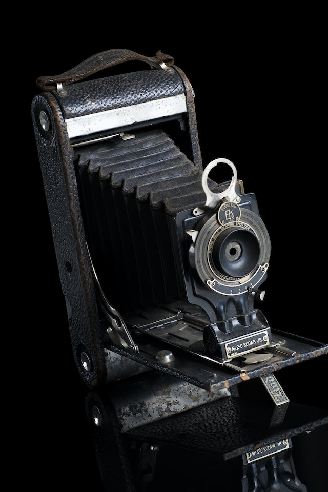
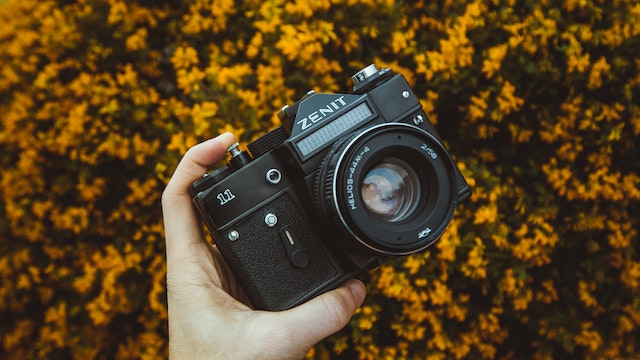
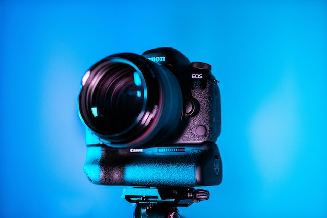
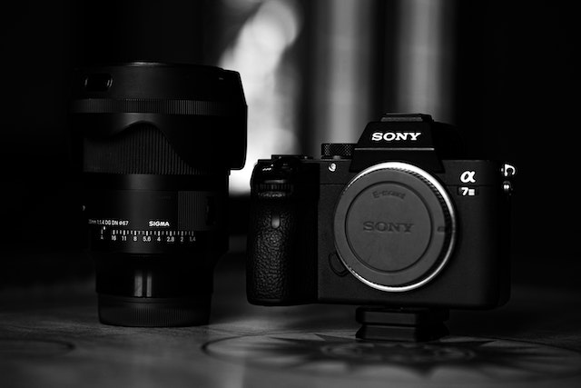

Originally cameras started off similar to the one pictured below. It used to take a lot of time and standing very still to capture just one Photograph! Photographs had to be developed in a 'dark room'.
SLR (Single-Lens Reflex) Cameras were the next breakthrough in technology, these were much more portable and more accessible to the general public, however still costly. These could be developed either at home in a 'dark room' or sent off to a printers.
DSLR (Digital Single-Lens Reflex) Cameras were the next on the scene and made Photography a lot faster regarding processing images and you could also see the image you have taken on the back of the camera; thus providing a huge advantage for the Photographer; especially in situations where there is no room for big errors, such as Weddings, Sport and High Fashion Photoshoots. DSLR Cameras are still widely used today and most Photographers will have one.
Mirrorless Digital Cameras are the latest creation and are proving very popular; especially amongst Professional Photograhers and keen Amateur Photographers. A few benefits are: better image stabilization, quieter shutter noise so more discreet, Lighter and more compact, better focusing such as eye tracking, generally a lot have higher frame rates so can take more photos on a burst - great for tracking a fast subject. All in all they seem to be a prefered choice for a lot of Photographers nowadays.
